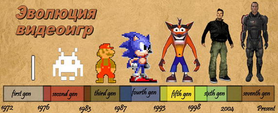
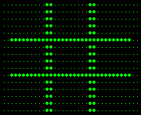
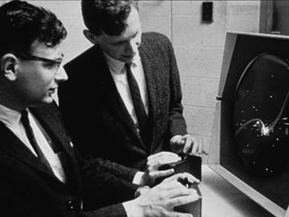

- Что может быть интереснее компьютерных игр? Ничего, хотя родители страшно их не любят. Но мы с вами дети века "Ай-Ти". Устраивайтесь поудобнее. Я расскажу вам про самые первые и самые последние компьютерные игры :)
Первые идеи

1947 год Подан первый патент на использование электронно-лучевой трубки (осциллограф,
первый тип компьютерных дисплеев) для игровых целей. Патент был подан Томасом Т. Голдсмит-младшим
и Эстл Рей Манном 25 января 1947 года и получен 14 декабря 1948. В патенте описывалась идея управления
контроллером положением светящихся точек на экране.
1948 год Создан алгоритм шахматной игры для компьютера. Авторы алгоритма - Алан Тьюринг и его
коллега Д. Г. Чемпернаун. (Алгоритм – это ещё не совсем программный код, а всего лишь логическое
словесное описание действий, разделённое на отдельные строчки).
1950 год Выпущена статья о разработке шахматной программы для компьютера. Автор - Клод Шеннон.
Статья «Программирование шахматных игр для компьютера» была официально опубликована в журнале
«Philosophical Magazine». (Программа – алгоритм, переведённый в программный код компьютера).
(1950 или 1951 год). Написана первая шахматная программа. Создатель - доктор Дитрих Принц. Программа
получила название «TUROCHAMP». Эта программа была лишь полезной наработкой на будущее, так как в то
время ещё не существовало столь мощных компьютеров, способных запустить шахматную программу.
1951 год Появилась идея создания интерактивного телевидения на основе компьютеров. Идею предложил
инженер Ральф Баэр (Ralph Baer). Это была всего лишь идея, без каких-либо практических наработок или
результатов.
Первые экземпляры игр

1952 год Создана первая логическая компьютерная игра «OXO» - компьютерная реализация
«крестиков-ноликов» (поле три на три клеточки, пользователь делал свой ход, после этого
компьютер делал ответный ход). Игра была создана А.С. Дугласом во время его обучения на
докторскую степень в Кембриджском университете (Великобритания). Дуглас писал свою
диссертацию на тему взаимодействия человека и компьютера, а игру использовал как наглядную
иллюстрацию. Игра существовала в единственном экземпляре на большом компьютере – мэйнфрейме
EDSAC.
1958 год Создан первый симулятор игры в теннис. Создатель – Уильям Хигинботем – один из
учёных Брукхейвенской Национальной Лаборатории (г. Нью-Йорк, США). Игра получила название
«Tennis for Two». В этой игре два человека управляли подвижными платформами так, чтобы
отбивать мячик. Компьютер не участвовал в игре, а лишь в реальном времени отрисовывал результат
действий игроков на осциллограф. Эта игра существовала в одном единственном экземпляре.
1962 год Создана компьютерная игра «SpaceWar!». Создатели – Стив Расселл и группа студентов
Массачусетского Технологического Института (MTI) (г. Кембридж, США). Игра представляла собой
следующее: два небольших космических корабля летали по экрану, стреляли в друг друга и уворачивались
от единственного подвижного препятствия в виде звезды. Специально для игры были созданы контроллеры,
отдаленно похожие на современные джойстики. «SpaceWar!» стала первой по-настоящему компьютерной игрой,
ведь две предыдущие игры были лишь компьютерной реализацией уже существовавших настольных игр.
Эта игра долгое время существовала в одном единственном экземпляре.
(На самом деле в MTI начали делать игры немного раньше. С 1959 по 1961 годы на компьютере TX-0,
ещё до «SpaceWar!», были созданы три игры. «Mouse in the Maze»: игрок сам расставлял стенки
лабиринта (палочки) и кусочек сыра (точку), а компьютер в виде мышки (ещё одна точка) пытался
пройти через лабиринт к сыру. «HAX»: управление звуковым устройством с помощью компьютера.
«Tic-Tac-Toe»: ещё одна компьютерная версия игры «крестики-нолики». К сожалению, эти игры
не были запечатлены на фото, факт их существования подтверждён только на словах).
Начало распространения игр

1962 год В апреле 1962 года компания DEC начала продажи относительно небольших компьютеров
PDP-1. В базовую комплектацию этих компьютеров в качестве тестовой программы входила игра «SpaceWar!».
Таким образом «SpaceWar!» стала первой игрой, выпущенной в тираж..
1966 год Ральф Баер, узнав, что его идея об интерактивном телевидении, озвученная в 1951 году,
уже воплощается в жизнь в виде компьютерных игр, начал заниматься разработкой новых игровых прототипов.
Он создал 7 экспериментальных игр..
1968 год Ральф Баер разрабатывает свою экспериментальную консоль под названием «Box Brown» (Коричневая
коробка). На ней можно было играть во все придуманные им игры. Были и простые аркадные игры - «Chase Game»:
два квадрата гоняются друг за другом на экране; и игры совершенно нового типа «Target Shooting games»:
нужно было стрелять из светового пистолета в экран..
1969 год Программист Кен Томпсон создал видеоигру под названием «Space Travel» для операционной системы
(ОС) «Multics». В этой игре моделировалось движение всех планет Солнечной системы, игрок управлял
космическим кораблём и должен был аккуратно посадить корабль на одну из планет. Примечательность
этой игры в том, что при её портировании на ассемблер, автор начал написание новой ОС «UNIX».